体感操作✖ランニングゲーム
狙った敵の弱点に合わせて、一撃必殺の斬撃放つ！
作品説明
本作はNintendo Switch向けに開発したゲームです。体感操作を中心に楽しめるように、キャラクターがステージ内を自動で走る仕様にしました。その結果、ランニングゲームの形になりました。
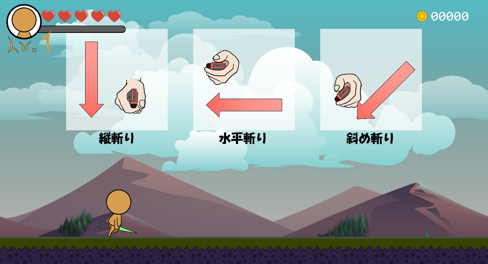
Switch内部の姿勢値を使うことで、Joy-Conの傾きを簡単に取得できます。加速度センサーから計算する方法もありますが、重力やJoy-Conの回転を考慮する必要があるため、姿勢値を使った方が正確で簡単です。
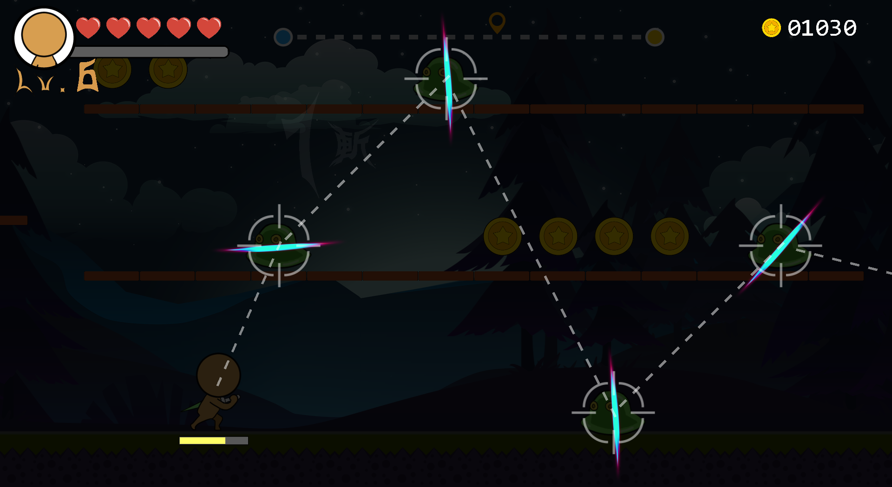
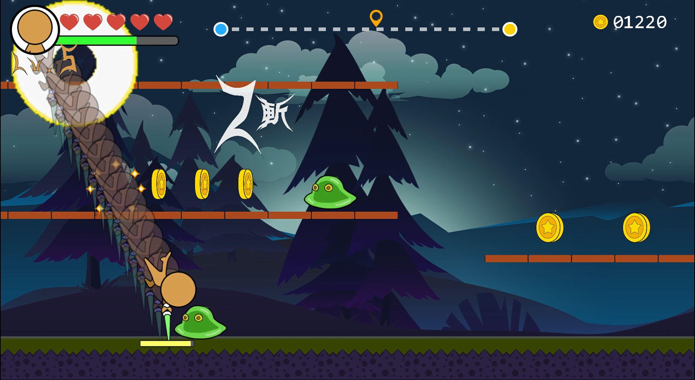
本作の目玉システム「見破り」は、敵の弱点を見通し、その方向に合わせて正しい斬撃を行うことで、敵の目の前まで一気にダッシュし、一撃必殺で倒します。
さらに、一撃必殺後に続けて正しい斬撃を行うことで、連続コンボにつなげることができます。
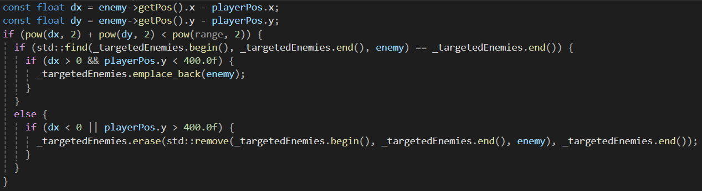
プレイヤーが「見破り」状態に入ると、プレイヤーを中心として敵との距離順に敵を配列へ記録します。
その後、探知範囲から外れた敵は配列から削除します。
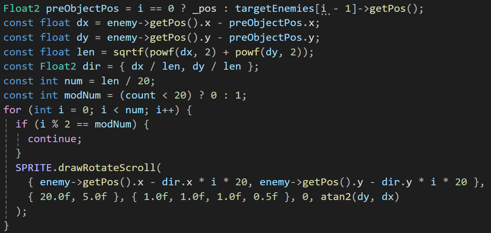
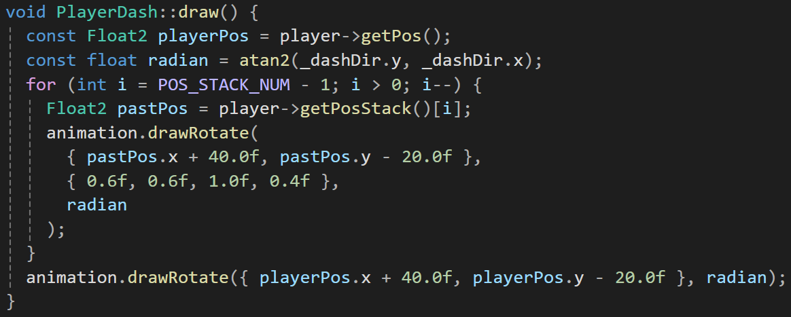
この距離順に並べた敵の配列をもとに、一撃必殺コンボの判定や敵順の可視化を行いました。
また、arctanを用いてターゲットされた敵の位置から前進角度を算出し、ルートを示す破線の描画や、プレイヤーのダッシュ方向の取得ができました。
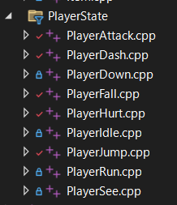
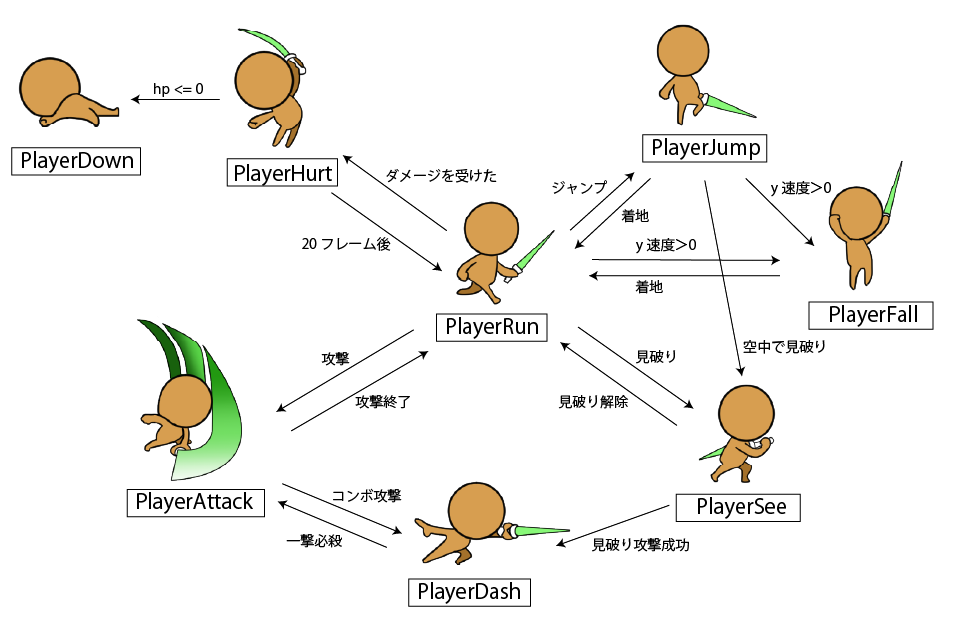
プレイヤーには複数の状態がありますが、ステートパターンを用いることで、各状態の管理や遷移を容易に行えるようになります。
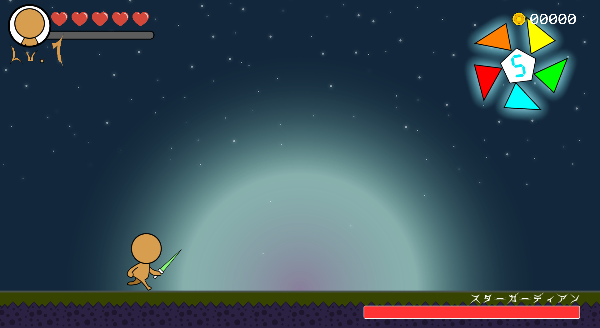
第三ステージのボス戦では、ボスは五つの角を使ってプレイヤーに攻撃してきます。
五つの角をすべて破壊するまでは、ボスのコアにダメージを与えることはできません。
また、ボスの攻撃パターンは四種類用意しています。
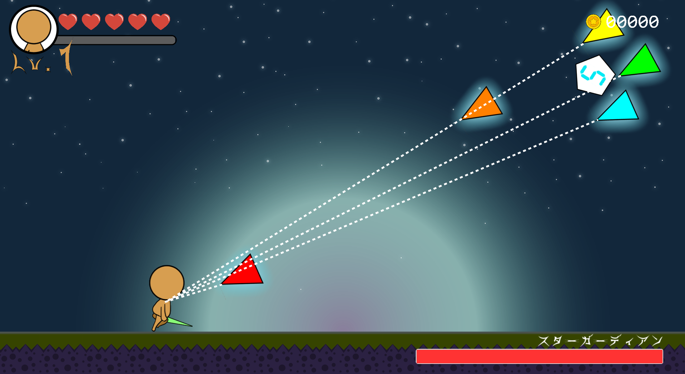
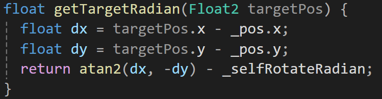
一つ目は、プレイヤーを狙って角を一つずつ射出するエイム攻撃です。
三角関数のarctanを使用してプレイヤーへの方向角を算出し、その角度に角を回転させた後、同じ方向へ飛ばします。
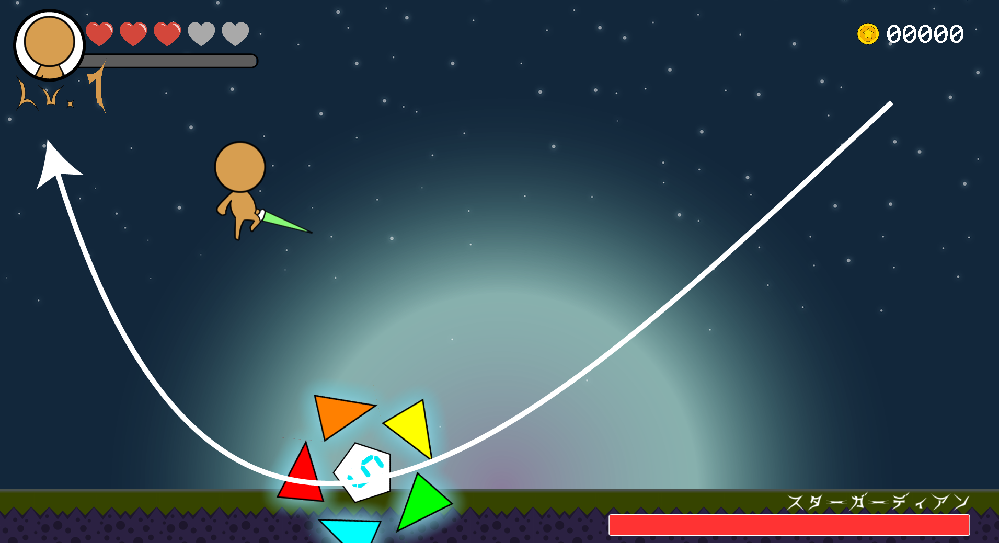
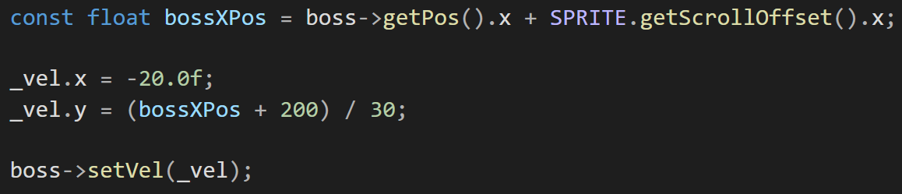
二つ目は、ボス自身が角ごとにプレイヤーへ突進する攻撃です。
このとき、X座標に応じてボスのY方向速度を変化させることで、二次曲線のような軌道で移動する動きを表現しています。
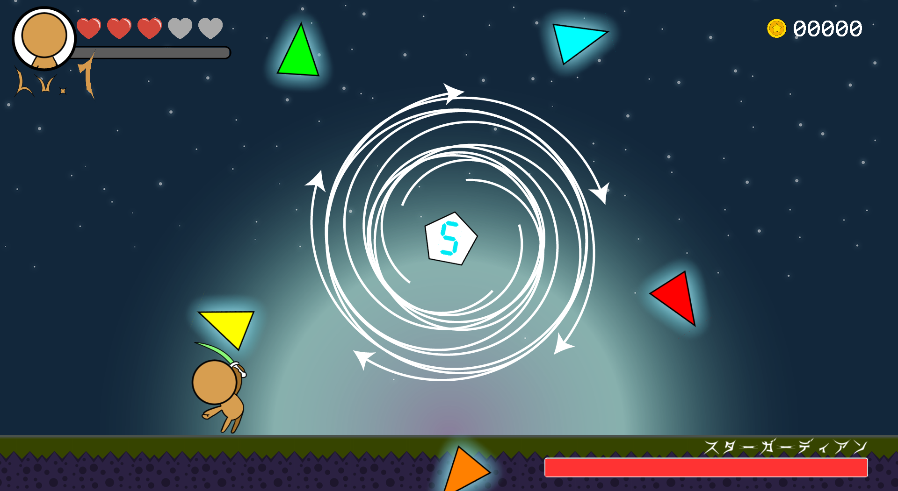
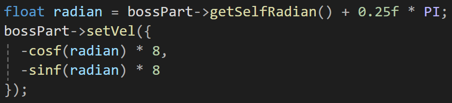
三つ目は、ボスが画面中央から角を時計回りに回転させながら、徐々に外側へ拡大する攻撃です。
各角の前進速度（接線方向）を三角関数で設定し、回りながら外へ広がる動きを実現しました。
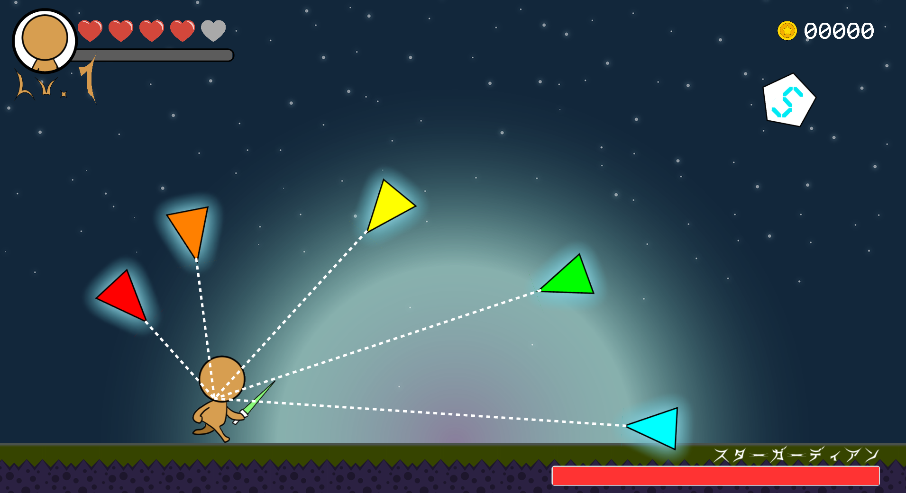
四つ目は、ボスの角がプレイヤーを包囲して、一斉にプレイヤーへ向けて発射する攻撃です。
まず各角を指定した位置まで移動する。そのあと、プレイヤーの位置を参照して向きを調整し、一斉に発射します。
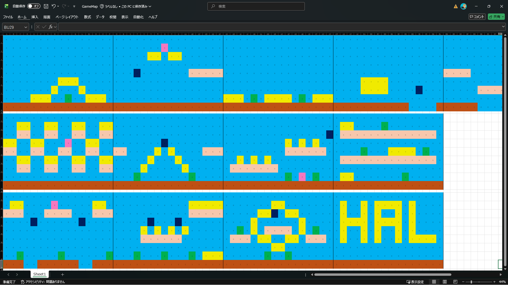
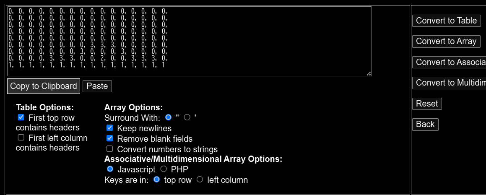
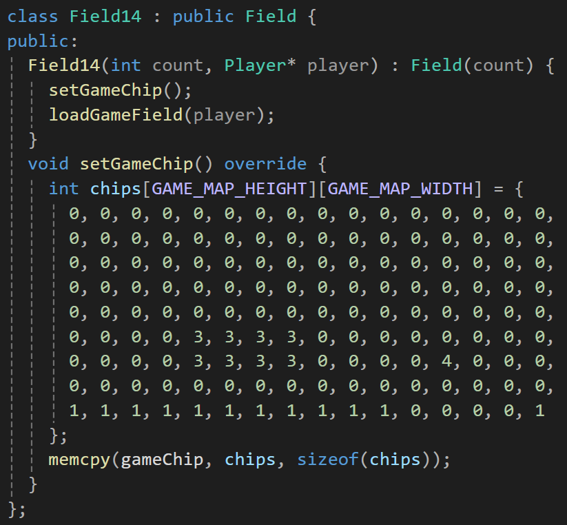
Excelで複数のフィールドパターンを作成し、外部コンバーターで配列に変換してプログラムに直接保存します。
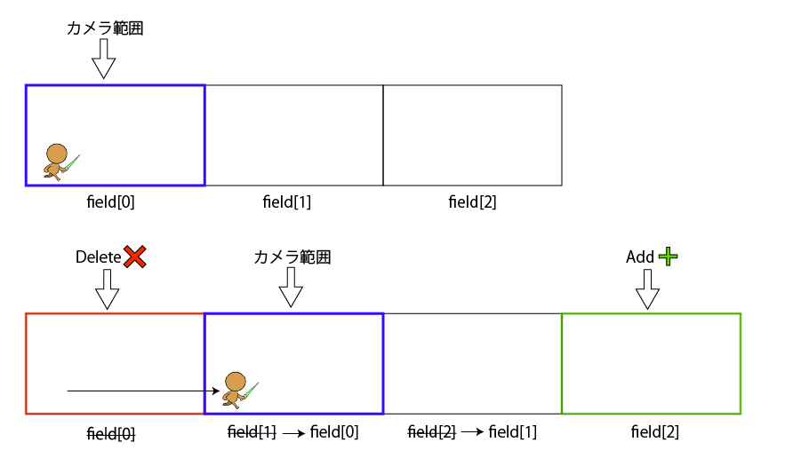
ゲームフィールドは同時に3つまでしか存在しません。
新しいフィールドに入った際は、前のフィールドを削除し、新しいフィールドを配列の末尾に追加します。
これにより、ゲーム全体の処理負荷を抑えることができます。
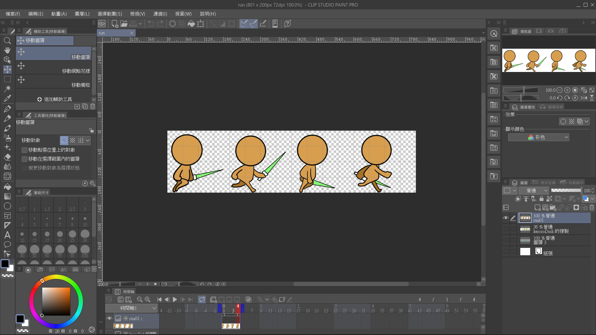